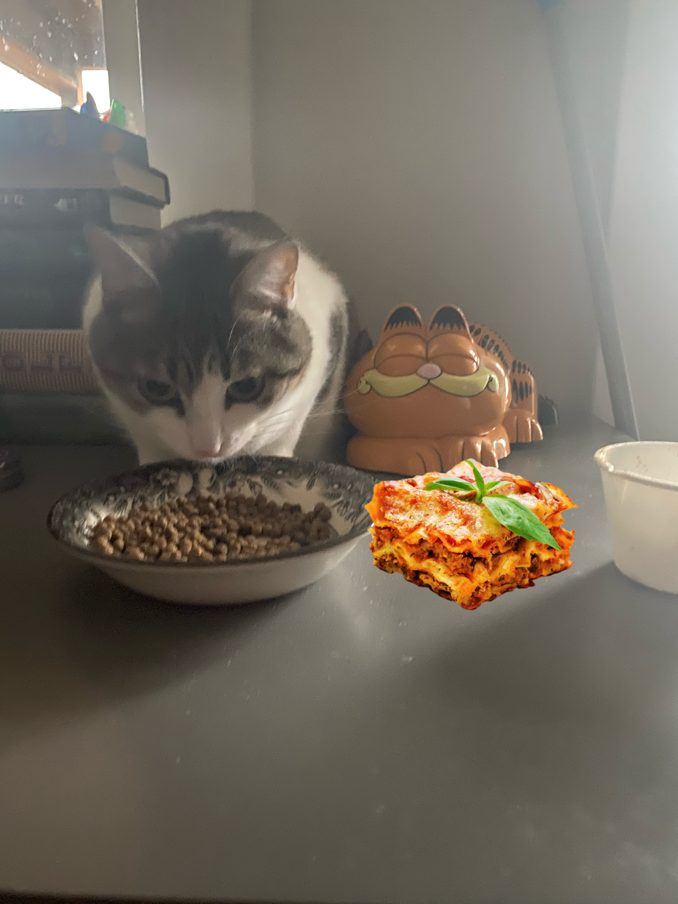

Welcome to the Jungle of My Five Cats

I know what you're thinking, "Why the hell do you have so many cats?" Well, the answer is simple. It's my girlfriend's fault. Before we moved into together, she had three cats and I had two. And as we all know, 2+3 does equal way too many cats. At first it was a rocky transition, with lots of hissing and scratching. The cats also had their own growing pains. But despite the tumbleweeds of hair and mountains of kitty litter, we are one happy cat family. Here are the facts about my five cats.
Willa
Willa is a brave and fearless old lady who happens to be blind. Willa doesn't let her blindness hold her back though! She can be seen jumping and climbing all throughout the house. She may run into the occassional door frame here and there, but hey, who doesn't?
Tye

Tye is an independent cat who often scurries throughout the house undetected. Tye does make sure to check in every couple hours just to make sure she hasn't missed out on any wet food.
Dizzle

Dizzle is a big, old-fashioned chonker. He is also the ulitmate sweetie who is always trolling for a couple pets. Watch out though, if you are not paying attention, he will sneak on top of you immobilizing you for hours.
Monster

Monster is a big, strong cat as well as big, scaredy cat. Monster was found as kitten in a parking lot all alone. That upbringing has made him skittish around new people, sounds, and household objects. But once you gain Monster's trust he's your trusty ally forever.
Bugs Bunny
Bugs Bunny is the baby and the life of the party. Bugs really knows how to turn on the charm and will always be the first one to greet you when you come home. You can often find her sprawled out on the dining room table begging for attention.